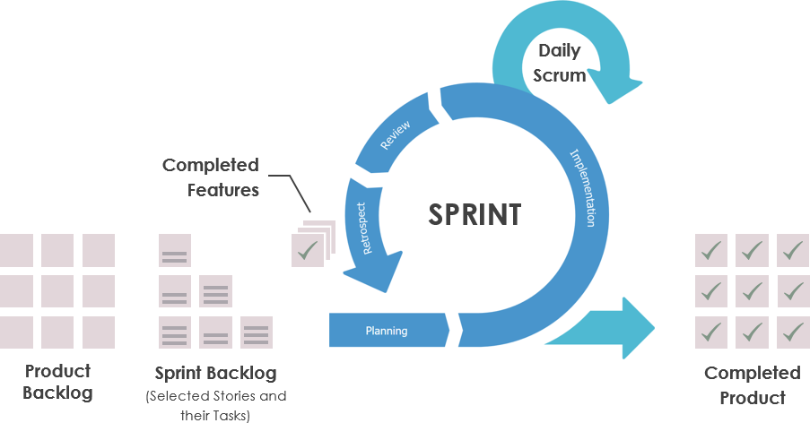

Scrum
Development Methodology
Winston Royce's Faterfall Model
Agile methodology
(Agile Manifesto by “Agile Alliance” 2001) assigns next values:- Individuals and interactions over processes and tools
- Working software over comprehensive documentation
- Customer collaboration over contract negotiation
- Responding to change over following a plan

What's scrum?
Scrum Development Team
- Self-Organizing
- Cross-Functional
- 3 - 9 members

ScrumMaster
The Product Owner
- Product Backlog
Sprints
Scrum methodology is like a racecar